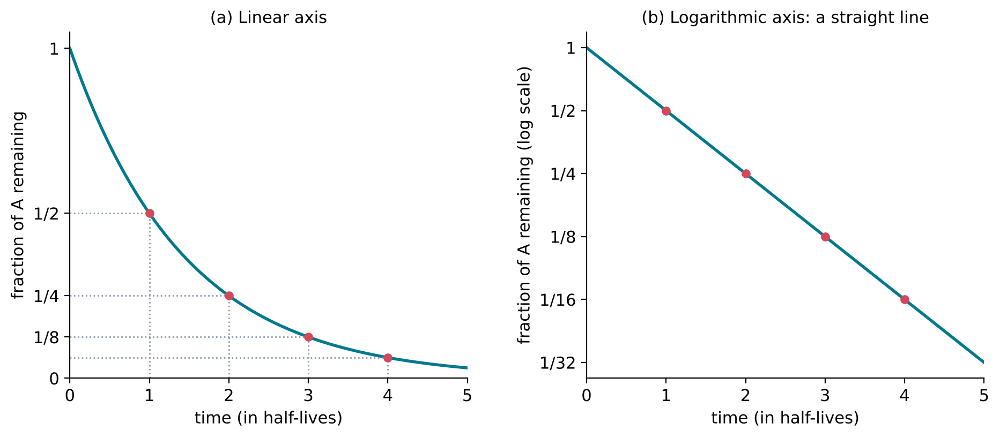
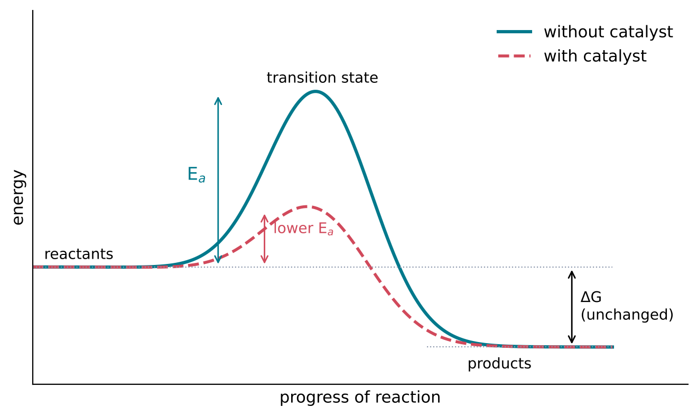
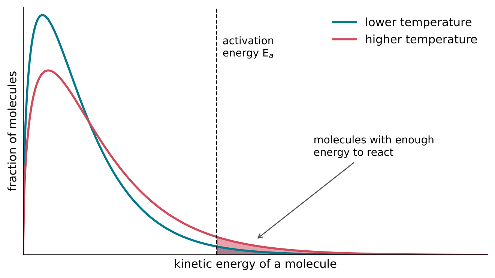
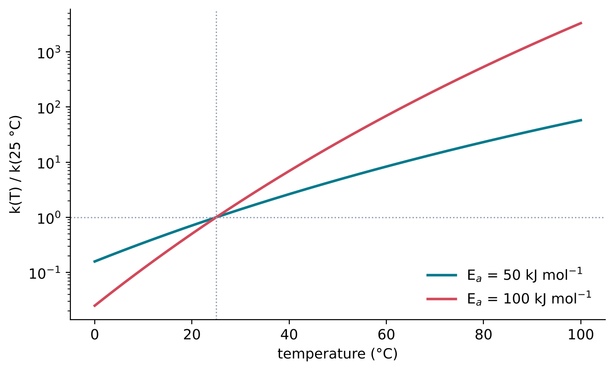
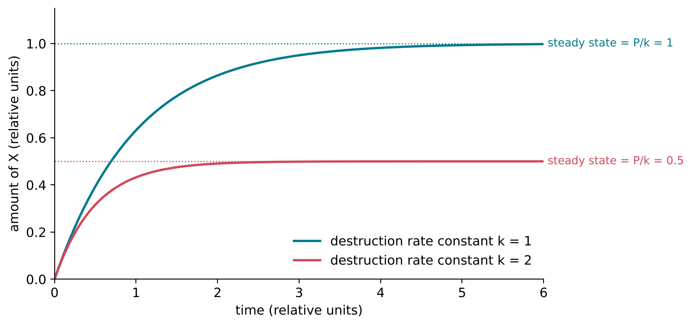

10 How Fast: Reaction Rates
The question of this chapter
Chapter 9 ended with a puzzle. A mixture of hydrogen and oxygen can turn into water with a large release of Gibbs energy, yet it can be kept for a long time without reacting. Some favourable reactions are over in a fraction of a second; others take years, or millions of years. This chapter asks: what determines how fast a reaction goes? The answer involves the concentrations of the reactants, an energy barrier that every reaction must cross, the temperature, and catalysts that lower the barrier. Together they explain why a molecule can be thermodynamically doomed and still survive, and why the amount of a molecule that accumulates depends on a race between its formation and its destruction.
10.1 The rate of a reaction
Definition
The rate of a reaction is the change in the concentration of a reactant or product per unit time. For a reaction A → B, the rate is the decrease in [A] per second, or equivalently the increase in [B] per second. Its usual unit is mol L−1 s−1. When the coefficients in the balanced equation are not all 1, the change in each concentration is divided by its coefficient, so that the rate has the same value whichever substance is followed (IUPAC, n.d.-d). For 2 H2 + O2 → 2 H2O, for example, hydrogen is used up twice as fast as oxygen, but the rate of the reaction is one value.
The rate of most reactions changes as the reaction proceeds. It is usually greatest at the start, when the concentrations of the reactants are highest, and falls as they are used up.
Rate laws and rate constants
The dependence of the rate on concentration is described by a rate law, found by experiment. Two simple forms cover many reactions:
- In a first-order reaction, the rate is proportional to the concentration of one reactant: rate = k[A]. Doubling [A] doubles the rate. Reactions in which a single molecule falls apart or rearranges are often first order, and so are reactions with the solvent, such as hydrolysis in water, because the concentration of water hardly changes.
- In a second-order reaction, the rate is proportional to the product of two concentrations: rate = k[A][B], or k[A]2 when two molecules of A react with each other. Doubling both [A] and [B] quadruples the rate. Reactions that require two molecules to meet are often second order.
The proportionality factor k is the rate constant. It does not depend on concentration, but it depends strongly on temperature and is changed by catalysts. Its unit depends on the rate law: s−1 for a first-order reaction, and L mol−1 s−1 for a second-order reaction, so that the rate always comes out in mol L−1 s−1.
The order of a reaction is the sum of the powers of the concentrations in its rate law. It cannot, in general, be read from the balanced equation, which shows only the overall change and not the steps by which it happens. For the same reason, a rate law is measured, not deduced.
The rate law of a second-order joining reaction contains a consequence that matters for the origin of life. If [A] and [B] are both diluted tenfold, the rate of A + B → AB falls a hundredfold, while a first-order destruction of AB, such as its hydrolysis, is not slowed at all. Dilution therefore slows the joining of molecules far more than their breakdown, in addition to the effect on equilibrium described in Chapter 8.
10.2 First-order reactions and half-life
Exponential decay
For a first-order reaction A → products, the rate at which A disappears is proportional to how much A is left. A quantity that decreases in proportion to its own size decreases exponentially (Chapter 1):
\[ [\mathrm{A}] = [\mathrm{A}]_0\, \mathrm{e}^{-kt} \]
where [A]0 is the concentration at time t = 0 and e = 2.718… is the base of natural logarithms.
Half-life
The half-life, t1/2, is the time in which the concentration of a reactant falls to half its initial value. Setting [A] = [A]0/2 in the equation above and taking natural logarithms gives
\[ t_{1/2} = \frac{\ln 2}{k} = \frac{0.693}{k} \]
For a first-order reaction, the half-life does not depend on the starting concentration: whatever amount is present, half of it is gone after one half-life, three-quarters after two, seven-eighths after three, and a fraction (1/2)n remains after n half-lives (Figure 10.1). After ten half-lives, less than one part in a thousand remains, since (1/2)10 = 1/1024.
Radioactive decay follows the same law, which is why half-lives are used both for radioactive nuclei and for chemical reactions. Carbon-14, for example, has a half-life of 5700 years (Chechev and Bé 2012) (Chapter 1). The difference is that radioactive decay is a property of the nucleus and is practically unaffected by temperature or chemical environment, whereas the half-life of a chemical reaction can change by many orders of magnitude with temperature, pH or the presence of a catalyst.

10.3 The energy barrier
Collisions
For two molecules to react, they must meet. In a gas or a solution, molecules collide with one another billions of times per second, yet in a slow reaction only a tiny fraction of these collisions lead to products. Two conditions must be met. The molecules must meet in a suitable orientation, with the atoms that will form the new bond close to each other. And they must bring enough energy into the collision to begin breaking existing bonds.
Activation energy and the transition state
As two molecules react, their atoms pass through arrangements in which the old bonds are partly broken and the new ones partly formed. Such arrangements have a higher energy than either the reactants or the products. The arrangement of highest energy along the path is the transition state, and the energy that the reactants must acquire to reach it is the activation energy, Ea (Figure 10.2). The activation energy is a barrier between reactants and products. It is separate from the overall Gibbs energy change: a reaction may be strongly favourable (products far lower than reactants) and still have a high barrier, as the mixture of hydrogen and oxygen shows.

Only a few molecules have enough energy
At any temperature, the molecules of a substance do not all have the same energy. Collisions continually redistribute energy among them, so that most molecules have energies near the average, of the order of RT per mole (Chapter 9), while a few have much more (Figure 10.3). Only those with at least the activation energy can react. The fraction of molecules with an energy of at least Ea is, to a good approximation, proportional to the Boltzmann factor
\[ \mathrm{e}^{-E_{\mathrm{a}}/RT} \]
For an activation energy of 50 kJ mol−1 at 25 °C (298.15 K), Ea/RT = 20.2, and the Boltzmann factor is 1.7 × 10−9: fewer than two molecules in a billion have enough energy at any moment. At 35 °C the factor is 3.3 × 10−9, nearly twice as large. A small rise in temperature greatly increases the small number of molecules in the high-energy tail of the distribution, and this is why rates are so sensitive to temperature.

10.4 Temperature and the Arrhenius equation
The equation
The dependence of a rate constant on temperature is described by the Arrhenius equation, proposed by the Swedish chemist Svante Arrhenius in 1889 (IUPAC, n.d.-a):
\[ k = A\,\mathrm{e}^{-E_{\mathrm{a}}/RT} \tag{10.1}\]
Here A, the pre-exponential factor, has the same unit as k and reflects how often molecules collide in a suitable orientation; the exponential factor is the Boltzmann factor of the previous section; T is the absolute temperature; and R is the molar gas constant, 8.314 462 618 J K−1 mol−1 (National Institute of Standards and Technology, n.d.). Ea must be expressed in J mol−1, so that Ea/RT is a pure number.
Comparing two temperatures
Taking the ratio of the rate constants at two temperatures T1 and T2, the factor A cancels:
\[ \frac{k(T_2)}{k(T_1)} = \exp\!\left[\frac{E_{\mathrm{a}}}{R}\left(\frac{1}{T_1} - \frac{1}{T_2}\right)\right] \tag{10.2}\]
where exp(x) means ex. For a reaction with Ea = 50 kJ mol−1, warming from 25 °C to 35 °C increases the rate constant by a factor of 1.92, and warming to 100 °C by a factor of about 58. For Ea = 100 kJ mol−1, the corresponding factors are 3.70 and about 3300 (Figure 10.4). The often-quoted rule that a rate doubles for every 10 °C rise is therefore true only for activation energies near 50 kJ mol−1 close to room temperature; for higher barriers the effect of temperature is larger. In the other direction, a reaction at 0 °C is slower than at 25 °C by a factor of 6.3 (for 50 kJ mol−1) or 40 (for 100 kJ mol−1).

The Arrhenius plot
Taking the natural logarithm of Equation 10.1 gives
\[ \ln k = \ln A - \frac{E_{\mathrm{a}}}{R}\cdot\frac{1}{T} \]
A graph of ln k against 1/T is therefore a straight line with slope −Ea/R. This graph, the Arrhenius plot mentioned in Chapter 1, is the standard way of measuring an activation energy: the rate constant is measured at several temperatures, the points are plotted, and Ea is obtained from the slope. If A and Ea themselves change with temperature, the plot is curved; IUPAC therefore defines the activation energy more generally through the slope at each temperature (IUPAC, n.d.-c).
An example from the origin of life: the decomposition of ribose
Ribose, the sugar of RNA, is not stable in water. Larralde, Robertson and Miller measured how fast it decomposes in neutral solution (pH 7.0) at temperatures between 40 °C and 120 °C (Larralde et al. 1995). The half-life was 73 minutes at 100 °C, and the value extrapolated to 0 °C was 44 years. The two half-lives differ by a factor of about 3.2 × 105. Since the half-life of a first-order reaction is inversely proportional to its rate constant, Equation 10.2 gives an activation energy of about 107 kJ mol−1, and, at 25 °C, a half-life of roughly 300 days. This estimate assumes that the reaction obeys the Arrhenius equation with constant Ea over the whole range. Even at 0 °C, a few decades is a short time on the scale of the early Earth: ribose formed in warm water would have had to be used, or protected, soon after it was made.
10.5 Catalysts
What a catalyst does
A catalyst is a substance that increases the rate of a reaction without changing the overall standard Gibbs energy change of the reaction (IUPAC, n.d.-b). It provides an alternative path with a lower activation energy (Figure 10.2) and is regenerated at the end of each cycle, so that a small amount of catalyst can convert a large amount of reactant.
The effect of lowering the barrier follows from the exponential in Equation 10.1. Lowering Ea by 20 kJ mol−1 at 25 °C, with A unchanged, multiplies the rate constant by e^20 000/(8.314 × 298.15)^, a factor of about 3200. A reaction that would take nine years would then take about a day.
What a catalyst does not do
Because a catalyst does not change ΔG°, it does not change the equilibrium constant (Chapter 9). It speeds up the forward and reverse reactions by the same factor and only allows equilibrium to be reached sooner. A catalyst cannot make an unfavourable reaction favourable; it can only make a favourable reaction fast. A catalyst for joining building blocks in water is therefore equally a catalyst for cutting them apart.
Catalysts in chemistry and in life
Catalysts take many forms: metal surfaces, minerals, dissolved ions, acids and bases. The catalysts of living cells are mainly proteins called enzymes. Their effects can be enormous: the enzyme orotidine 5\('\)-phosphate decarboxylase, for example, makes its reaction about 1017 times faster than the same reaction without a catalyst (Radzicka and Wolfenden 1995). Some are RNA molecules, called ribozymes. The discovery, in the early 1980s, that RNA can act as a catalyst as well as carry genetic information (Kruger et al. 1982; Guerrier-Takada et al. 1983) is one of the foundations of the idea that RNA preceded proteins in the history of life.
A reaction catalysed by one of its own products is called autocatalytic (IUPAC, n.d.-b). In an autocatalytic reaction, the more product there is, the faster more of it is made, and the product can increase exponentially for a while. A molecule that catalyses the formation of copies of itself is the chemical core of replication.
10.6 Competition between rates
Formation against destruction
On the early Earth, as in a laboratory flask, a molecule is usually being made and destroyed at the same time. Suppose that a molecule X is produced at a constant rate P (in mol L−1 s−1) and destroyed by a first-order reaction with rate constant k, for example hydrolysis. The concentration of X then changes as
\[ \text{rate of change of [X]} = P - k[\mathrm{X}] \]
At first, when little X is present, production wins and [X] rises. As [X] rises, so does its rate of destruction, until the two are equal. From then on [X] stays constant at
\[ [\mathrm{X}]_{\mathrm{ss}} = \frac{P}{k} \]
This state is called a steady state (Figure 10.5). It resembles an equilibrium in that nothing appears to change, but it is different: a steady state is maintained only as long as X is supplied, and it is not determined by ΔG° but by the ratio of two rates. If the supply stops, X disappears with the half-life of its destruction reaction. Doubling the rate constant of destruction halves the amount of X that can accumulate.

Competing reactions
A molecule can often react in more than one way. If a reactant A can be converted into a product B with rate constant k1 or into a different product C with rate constant k2, both by first-order reactions, the two products form in the ratio of the rate constants:
\[ \frac{\text{amount of B formed}}{\text{amount of C formed}} = \frac{k_1}{k_2} \]
The product that forms fastest dominates, even if another product would be more stable. A reaction whose outcome is decided by the relative rates of competing paths is said to be under kinetic control; one whose outcome is decided by the relative stabilities of the products, because the reactions are reversible and equilibrium is reached, is under thermodynamic control. Much of the difficulty of prebiotic chemistry lies here: the reactions that produce useful building blocks usually compete with many others that produce useless or harmful products, and a useful product is obtained in quantity only if its path is faster than the alternatives.
Key points
- The rate of a reaction is the change in concentration per unit time. Rate laws, such as rate = k[A] (first order) or k[A][B] (second order), are found by experiment.
- For a first-order reaction, [A] = [A]0e−kt and the half-life, t1/2 = 0.693/k, does not depend on concentration.
- Reactants must cross an energy barrier, the activation energy, at the transition state. Only a small fraction of molecules, given approximately by e−Ea/RT, has enough energy.
- The Arrhenius equation, k = A e−Ea/RT, describes the effect of temperature. For Ea = 50 kJ mol−1, a 10 °C rise near room temperature nearly doubles k; higher barriers give larger effects.
- A catalyst lowers the activation energy, speeds up forward and reverse reactions equally, and does not change K. Enzymes and ribozymes are biological catalysts.
- The amount of a molecule that accumulates under continuous production and destruction is a steady state, P/k, set by rates rather than by equilibrium. Competing reactions give products in the ratio of their rate constants.
Self-test
- A first-order reaction has a rate constant of 0.01 s−1. What is its half-life? What fraction of the reactant remains after 5 minutes?
- The rate of a reaction A + B → C is found to be proportional to [A][B]. By what factor does the rate change if [A] is doubled and [B] is halved? If both are reduced to one tenth?
- A reaction has Ea = 100 kJ mol−1. Using Figure 10.4 or Equation 10.2, by roughly what factor is it faster at 35 °C than at 25 °C? Compare with the “doubling per 10 °C” rule.
- A catalyst increases the rate of the forward reaction of A \(\rightleftharpoons\) B by a factor of 1000. By what factor does it increase the rate of the reverse reaction? What happens to K?
- A molecule is produced at a constant rate and destroyed by hydrolysis with a half-life of 10 days. If warming the solution shortens the half-life to 1 day, without changing the rate of production, how does the steady-state concentration change?